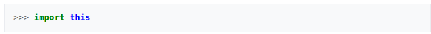

Guido Van Rossum, criador do Python
O Python foi concebido no final de 1989 por Guido van Rossum no Instituto de Pesquisa Nacional para Matemática e Ciência da Computação (CWI), nos Países Baixos, como um sucessor da ABC capaz de tratar exceções e prover interface com o sistema operacional Amoeba[10] através de scripts. Também da CWI, a linguagem ABC era mais produtiva que C, ainda que com o custo do desempenho em tempo de execução. Mas ela não possuía funcionalidades importantes para a interação com o sistema operacional, uma necessidade do grupo. Um dos focos primordiais de Python era aumentar a produtividade do programador.
Python foi feita com base na linguagem ABC, possui parte da sintaxe derivada do C, compreensão de listas, funções anonimas e função map de Haskell. Os iteradores são baseados na Icon, tratamentos de exceção e módulos da Modula-3, expressões regulares de Perl.
Parte da cultura da linguagem gira ao redor de The Zen of Python, um poema que faz parte do documento "PEP 20 (The Zen of Python)", escrito pelo programador em Python de longa data Tim Peters, descrevendo sumariamente a filosofia do Python. Pode-se vê-lo através de um easter egg do Python pelo comando:

O desenvolvimento de Python é conduzido amplamente através do processo Python Enhancement Proposal ("PEP"), em português Proposta de Melhoria do Python. Os PEPs são documentos de projeto padronizados que fornecem informações gerais relacionadas ao Python, incluindo propostas, descrições, justificativas de projeto (design rationales) e explicações para características da linguagem. PEPs pendentes são revisados e comentados por Van Rossum, o Benevolent Dictator for Life (líder arquiteto da linguagem) do projeto Python. Desenvolvedores do CPython também se comunicam através de uma lista de discussão, python-dev, que é o fórum principal para discussão sobre o desenvolvimento da linguagem. Questões específicas são discutidas no gerenciador de erros Roundup mantido em python.org. O desenvolvimento acontece no auto-hospedado svn.python.org.
Alguns dos maiores projetos que utilizam Python são o servidor de aplicação Zope, o compartilhador de arquivos Mnet, o sítio YouTube e o cliente original do BitTorrent. Grandes organizações que usam a linguagem incluem Google[36] (parte dos crawlers), Yahoo! (para o sítio de grupos de usuários) e NASA. O sistema de gerenciamento de reservas da Air Canada também usa Python em alguns de seus componentes. A linguagem também tem bastante uso na indústria da segurança da informação. A linguagem tem sido embarcada como linguagem de script em diversos softwares, como em programas de edição tridimensional como Maya, Autodesk Softimage, TrueSpace e Blender. Programas de edição de imagem também a usam para scripts, como o GIMP. Para diversos sistema operacionais a linguagem já é um componente padrão, estando disponível em diversas distribuições Linux. O Red Hat Linux usa Python para instalação, configuração e gerenciamento de pacotes. Outros exemplos incluem o Plone, sistema de gerenciamento de conteúdo desenvolvido em Python e Zope e a Industrial Light & Magic, que produz filmes da série Star Wars usando extensivamente Python para a computação gráfica nos processos de produção dos filmes.